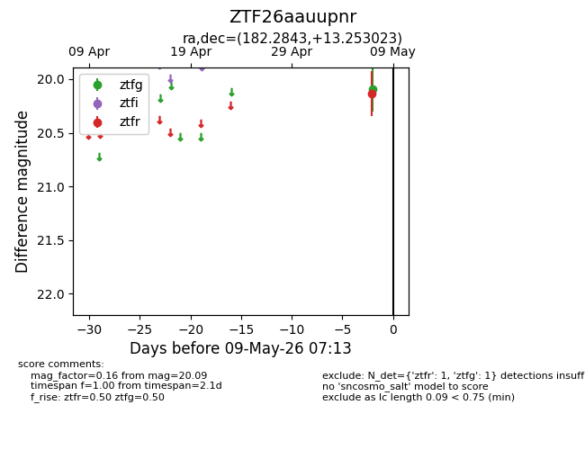
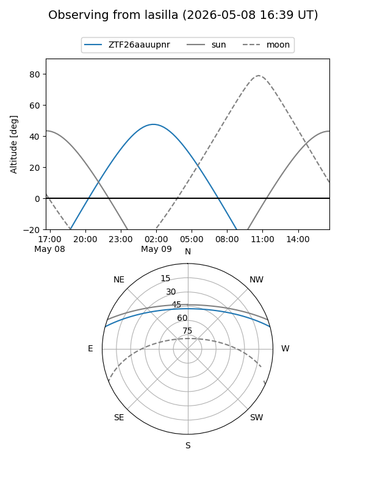
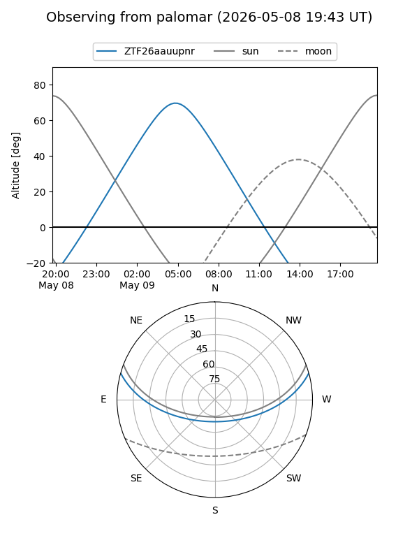

ZTF26aauupnr
Target ZTF26aauupnr at 2026-05-09 07:14
Aliases and brokers:
FINK: link
Lasair: link
ALeRCE: link
alt names
ZTF26aauupnr (ztf,fink_ztf)
Coordinates:
equatorial (ra, dec) = 182.2843,+13.25302
equatorial (HMS+DMS) = 12:09:08.24,+13:15:10.88
galactic (l, b) = (265.3682,+72.96117)
Flags:
Photometry:
last ztfg=20.09, ztfr=20.13
1 ztfg, 1 ztfr detections
Lightcurve

Visibility


Additional plots